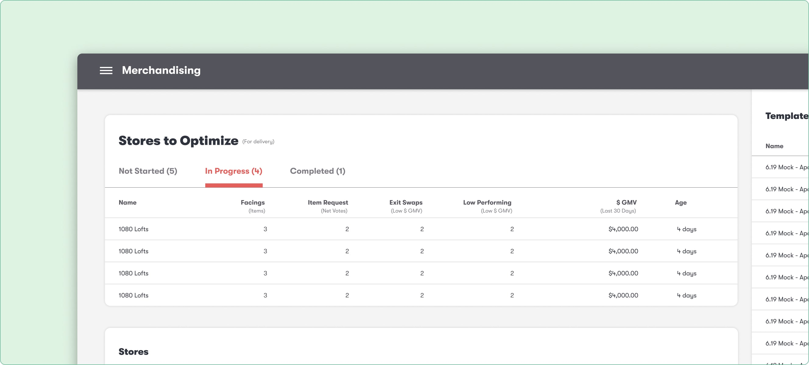

I designed an automation tool for the Stockwell’s retail team. Leveraging machine learning and crowd-sourcing, the tool provides stocking suggestions for Stockwell machines, significantly boosting efficiency. As the lead designer, I worked with a product manager, two engineers, and two retail buyers.
Gaining insights from the user research
I joined the project three months after initial user research and had to quickly get up to speed.
Unveiling the need for workflow automation
Here’s what unfolded as I delved into the project and identified the key challenges:
-
Traditional vs. Stockwell’s Approach –– Traditional retail giants like Walmart and Target use specific retail buyers for different product lines. However, Stockwell’s unique model needs buyers to research and customize product selections for each machine. While this method works, it poses scalability challenges that need automation.
-
Tackling Delivery shortcomings –– A crucial aspect of Stockwell’s model involves delivering products to each machine unit. However, delivering and stocking only a single product per visit proved costly. The ideal scenario for Stockwell is to achieve a balanced distribution of sales across all products.

Understanding our users and their workflow
Our primary users were five members of our retail team, while two were deeply involved in daily store operations. The need for workflow optimization became evident after we discovered they manage store tasks manually via cumbrecome spreadsheets.
Identifying the challenges
As we dissected the issues, we distilled our findings into the following key challenges:
- Cost of expansion – Hiring additional retail buyers for each new store group incurred significant expenses.
- Delayed store optimizations – The length to optimize 1,000+ stores take 2 to 3 weeks. This delay surfacing high selling products and thus impacts revenue growth.
- Escalating operational costs - Prolonged optimization timelines led to increased overhead costs for warehousing and transportation.
Envisioning solutions and potential outcomes
Envisioning the adoption of a workflow automation tool by the retail team, we hypothesized on these potential outcomes:
- Enhanced scalability – With an internal operation tool tailored to Stockwell’s retail model, we could effectively manage more stores with a lean team.
- Streamlined store optimizations – Leveraging AL/ML for store optimization could accelerate revenue growth within a shorter time frame, less than 2 to 3 weeks.
- Reduced Operational Costs – Swift store optimization would translate to lower operational expenses in the long run, enabling more efficient inventory and space management.
Mapping the new workflow
Before designing the automation tool, our team investigated the retail buyer’s store merchandising process. Armed with this insight, we mapped out the new workflow:
Sketching the blueprint before the hi-fi designs
I sketched wireframes to visualize the tool’s structure and core components. These sketches get translated into UI designs to facilitate communication of interface decisions to the team. Following feedback sessions, I iterated on each feature to ensure alignment with our objectives.
Upon my departure, the Stockwell Automation Tool was launched in 2019, marking the culmination of our efforts. While I was not privy to quantitative data post-launch, I firmly believed in the positive impact it would have.
- The anticipated impact of the Stockwell automation tool was designed to reduce the restocking timeline from three weeks to just one week.
Contributing to Stockwell’s design system
Amidst my primary project, I seized the chance to collaborate on auxiliary endeavors. One such endeavor involved contributing to Stockwell’s design system,a cornerstone of our design ethos. Below is a snapshot showcasing my contributions:
My Learnings and future improvments
Asking the right questions – Throughout the project, I leaned on my product manager for insights into the technical aspects. However, I discovered the invaluable perspective offered by engineers. Learning to frame questions effectively became a habit, shaping my approach at every stage.
Understanding user behavior – Reflecting on past experiences, I realized the importance of observing user actions rather than solely relying on their verbal feedback. Moving forward, I prioritize user testing sessions to glean insights into their behaviors and preferences.
Harnessing the design system – Initially I felt constrained by Stockwell’s design system, but after, I saw it as a chance for growth. While the existing color palette posed limitations, I learned to advocate for necessary changes and initiate discussions with colleagues to enhance our design patterns.